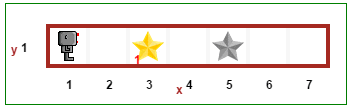

یاد گرفتن برنامه نویسی با ریبرگ آسونه همۀ کاری که باید انجام بدید اینه که این آموزش ها رو بخونید و مثال ها رو توی محیط ریبرگ امتحان کنید.
پیشنهاد می کنم که صفحه ی این آموزش ها و محیط ریبرگ رو توی دو تا پنجره یا سربرگ جدا باز کنید. قبل از شروع آموزش ها با اجرای یه برنامه توی محیط ریبرگ کاری کنید که ریبرگ اوّلین قدمش رو برداره. راهنماها طوری طرّاحی شده اند که بشه رو اون ها کلیک کرد و در صورتی که جایی به مشکل خورده باشید توصیه های مفیدی برای ادامه کار به شما ارائه می دهند.
Hint
به محیط ریبرگ برید و روی دکمه اجرا (یه مثلّث سفید کوچک توی پس زمینه آبی) کلیک کنید و قدم برداشتن ربیرگ رو تماشا کنید. می تونید یه نگاهی هم به این ویدئوی کوتاه بندازید تا ببینید چطوری ریبرگ توی محیطش (دنیای خودش) جا به جا می شه (البته ویدئو مال نسخه های قبلی هستش). پیشنهاد می کنم ویدئو رو تمام صفحه و با کیفی بالا نگاه کنید.
محیط ریبرگ برای شما طرّحی شده!
وقتی که که دنیای ریبرگ رو درست کردم این فکر توی سرم بود که یه محیط خودمونی و راحت برای یادگرفتن مفاهیم برنامه نویسی به وجود بیارم . با وجود این که می شه از جاوا اسکریپت-که زبان معمول دنیای وب هست- به عنوان زبان برنامه نویسی ریبرگ استفاده کرد، تصمیم گرفتم روی پایتون تمرکز کنم، زبانی که هم انعطاف پذیرتر بود و یادگرفتنش هم برای مبتدی ها و هم پیشرفته ها به یک اندازه راحت هست. این آموزش ها در درجه اوّل برای شمایی که می خواید برنامه نویسی یاد بگیرید نوشته شده. با این وجود، من یک سری اطّلاعات دیگه ای رو هم برای معلّم ها و کاربرهای دیگه ی محیط ریبرگ تو این آموزش ها گنجوندم. شما می تونید حین یادگرفتن مفاهیم برنامه نویسی بدون هیچ دغدغه ای از جا افتادن مورد مهمّی بی خیال اون اطّلاعات اضافی بشید.
این کتاب آنلاین نه بخش اصلی داره.
اگر روی هر کدوم از عنوان های بالا کلیک کنید به صفحه ای که زیرعنوان های هر بخش فهرست رو داره منتقل می شید.
برای مدرّس ها

دو تا کتاب (قرمز برای معلّم ها و آبی برای دانش آموزها) تولید شده توسّط سامسونگ کره بر اساس رورپل، برنامه ای که قبل از دنیای ریبرگ برای سیستم های رومیزی ساخته شده بود.
دنیای ریبرگ شدیداً از`کارِلِ ربات`_ ریچارد پَتیس الهام گرفته. برای کنترل این ربات مجازی از سه تا زبان برنامه نویسی (پایتون، جاوا اسکریپت، و کافی اسکریپت) می شه استفاده کرد. با این همه، این آموزش روی پایتون متمرکز شده که زبان برنامه نویسی مورد علاقۀ منه و به نظر خیلی ها هم یه زبان ایده آل برای آموزش مفاهیم برنامه نویسی به تازه کارهاست.
توی این آموزش من تا اون جایی که می شد آشنایی به متغیّرها رو به تعویق انداختم. همین کار رو هم برای نشانوندهای (arguments) تابع ها انجام دادم. این رویکرد به خاطر اینه که درس های اصلی پتس برای کارِل اصلاً متغیّری نداره. تمرکز دو قسمت اوّل اصلی این آموزش به نام های آموزش های پایه ای و توابع بازگشتی روی این قسمت هست. دنیای ریبرگ با هدف درست شده که ایده ی ریچارد پتیس رو تا جای ممکن ساده کنه، در حالی که معرفی مفاهیم خیلی پیشرفته برنامه نویسی رو امکان پذیر می کنه. بنابراین، به جای اوّلین برنامۀ «ساده ای» که توی بعضی از آموزش هایی به ظاهر برای تازه کارها پیدا می شه:
public class HelloWorld {
public static void main(String[] args) {
System.out.println("Hello, World");
}
}
ساده ترین برنامه ی درستی که توی محیط ریبرگ کار می کنه این برنامه هست:
()move
همین: یه دستور ساده. برای تدریس به تازه کارها چی می تونه از این ساده تر باشه؟
با این وجود، این دستور به همین تابع های ساده محدود نمی شه. مثلاً اگه یکی بخواد به جای این کار رویکرد شیئ گرا رو استفاده کنه ساده ترین برنامه درستی که ریبرگ معادل همین یک دستور ()move هست اینه:
()reeborg = UsedRobot
()reeborg.move
همچنین، از اون جایی که استفاده از کتابخانه های استاندارد مفیده، فراگیرها می تونن با نوشتن کدهای خودشون در مورد کتابخانه ها یادبگیرن و با این کار یاد می گیرن که پیمانه ها (modules) مثل خیلی های دیگه در اصل همون برنامه ها هستن. فرض بر این که اونا یه تابع برای گردش به راست توی کتابخونه شون به اسم ()turn_right تعریف کردن، این کد درست خواهد بود:
from library import turn_right
()turn_right
بنابراین، نیّت ما اینه که کاری کنیم که تا اون جایی که می شه فراگیرها درگیر کمترین مفاهیم ممکن بشند، و مفاهیم تازه (مثل استفاده از متغیّرها، نمادهای شیئ گرا، یا وارد کردن کد از یک کتابخانه) رو فقط موقعی یاد بگیرن که مقدّمات رو یادگرفته باشند. یک رهنمود تو نوشتن این آموزش ها این بوده که هر بار فقط یک مفهوم برنامه نویسی معرفی بشه. با این همه، سادگی رویکرد استفاده شده در محیط ریبرگ به این معنی نیست که کاری که می شه کرد محدود به مقدّمات محیط ربات هست. نسخۀ پایتون محیط ریبرگ بر اساس Brython_ هست و شامل خیلی از پیمانه های موحود در کتابخانه توابع استاندارد پایتون هست که می تونه تو برنامه نویسی پیشرفته به کار بره. یادگیری تکلیف محور محیط ریبرگ برای آموزش تکلیف محور طراحی شده. به فراگیرها تکلیف هایی که ریبرگ باید کامل کنه داده می شه و اون ها باید برنامه هایی رو بنویسند که به ریبرگ بگه چطور باید اون کار رو انجام بده. تکلیف ها شامل مواردی می شند که توی اون ها باید ریبرگ اشیائی رو جا به جا کنه، دیوار درست کنه، و یا به یه جای خاص توی دنیای ریبرگ بره. اشیاء توی دنیای ریبرگ رنگی هستند، و جاهایی که باید ریبرگ اون اشیاء رو ببره با سایه ی خاکستری همون شیئ مشخّص شدن.
اگر شما مثال هایی دارید که برای فراگیرهاتون مفیده (به خصوص تکلیف هایی برای ریبرگ)، ممنون می شم که اون ها رو برای من بفرستید تا این آموزش ها رو بهتر کنم.
رایگان
دنیای ریبرگ رایگان هستش. یعنی: استفاده اش مجّانیه، شما آزاد هستید که اون رو کپی کنید (و بگذارید توی سایت آموزشگاهتون) و نیاز به هیچ ثبت نام و ورود به وبگاهی رو نداره. برخلاف بعضی از سایت های آموزش کد نویسی، فراگیرها رو مجبور به پیگیری یک مسیر از پیش تعریف شده نمی کنه. از طرفی هم مدرّس ها آزادند تا حین استفاده از محیط ریبرگ محتواهای خودشون رو درست کنن.